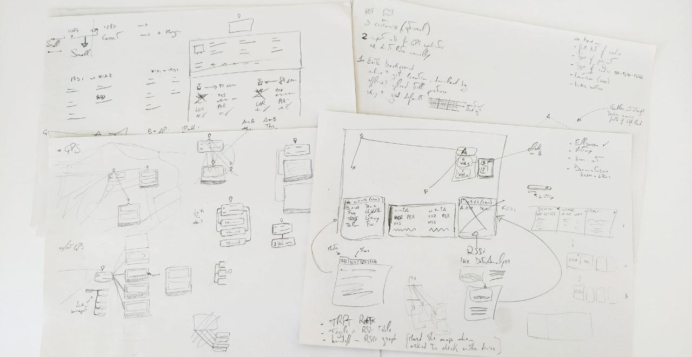
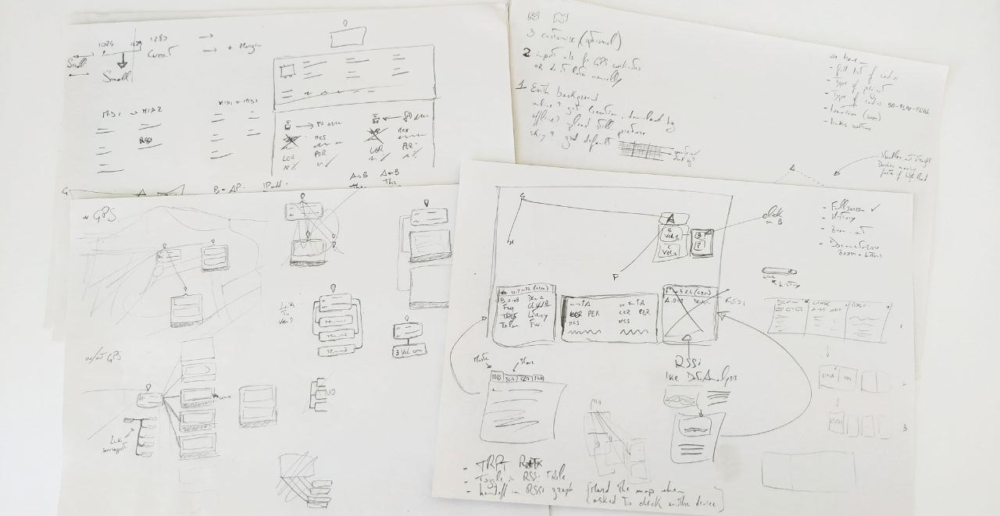

Concept + UX Design + Visual + Handoff
Why
Troubleshooting a network takes a lot of time, it's done with unintuitive tools and causes downtime that in some cases could be potentially dangerous.
Who
Network managers and site managers coming from different backgrounds and operating in many different environments (open pit and underground mines, harbors, train stations, etc...)
How
A comprehensive tool that can split into multiple layers all the details about a network, giving the most important information always first.
When I joined the company I knew nothing about networking. Sure I knew what "ping" means but here we were talking about some serious next-level stuff. Pseudolinks, hops, modulation rates... it took me a while and I had to ask a *lot* of
questions before finally starting to get a grasp of what was going on. Turns out, we have the only algorithm on earth that can connect a device to an AP (Access Point) in less than 300ms. Why is that important? Think about trains. Trains
move fast, really fast. How do you put wifi on a train? 4G is unstable, unreliable and costs a lot (in terms of maintenance. Note: 5G will be even worse with its range being less than half of what current 4G can achieve). With our software
we can connect a train to an AP and then to the following one and then to the following one and so on.. with virtually zero downtime and up to 500Mbps of real traffic. That's pretty cool. But how do you visualise this? and what do you
need to know when you troubleshoot a system like this one?
Identifying the problem
We had tools. 5 to be more precise. One was used to record past data, one to record live data, one was supposed to run in
the background the other one only on demand.. and the output of these tools were low-resolution PNGs exported using a command line. As I was the first and only designer in the company I couldn't simply go and ask other designers what were
the reasons behind such choices. Clearly my first move had to be to understand all these tools and list out all their features. I found the differences and the common points; with TX Rate, Throughput, RSSI, etc.. all on the table what
followed was weeks of priority sorting.
Because we had to move fast I also had to think about the layout. Our projects go from as little as 5 devices up to 200+ all talking to each other at the same time. My job was then to think
about something that would make sense when displaying either 2 results or 400 results (always consider that an extreme case can happen). Sketching was absolutely necessary at this point.
We opted for a classic list view that went through 3 iterations. We initially thought to list all radios under predefined categories would have been fine but couple sessions of user testing proved us wrong. What the user wanted was custom
sections so that they could manage part of their network with ease. After clubbing radios from the same categories together we realised having a whole different table for links (see a link as a path between two devices, the quality of
the link determines how good your performances will be) wasn't the best option. We included each link under a "More" tab and everything started making a lot of sense.
Journey
With one piece out of the puzzle,
we found ourself in the middle of a journey. I talked with most of my colleagues, even those who were working in other offices, to gather as much information as I could. This was probably the most useful part and it gave me enough data
to start sketching a potential journey that could work for all our customers. It was crucial to understand the differences between 'commissioning' (that moment when our devices are deployed and installed on site) and 'production' (when
the network is running with real traffic). With more than 70 software/hardware checks, the first phase had to be successful in order for the project to go live. However, most of these checks were strictly related to each other. This means
that if one fails, there is no need to go forward.. you already know the network will suffer in performance so better stop there and solve that issue before going on. Again, a crucial step was to include a Wizard that could put the user
away from all these checks and instead do part of the job automatically.
The goal was to go from one file containing all the configurations for all the devices involved in that project, to a dashboard visualising live data. With
start and end points set, what was missing was a whole journey where the less the user has to interact, the better. I started doing some sketches and after a couple rounds of talks with developers, engineers and tech support I finally
managed to have something good enough to be considered a draft.
I created a list of checks where the last ones are collateral to the ones above them. It was important to build something with a clear order to avoid awkward warnings related to parameters far from being the root of the problem. This helped
us a lot and it quickly became our point of reference for all future decisions. Whenever we needed to add something we would look at the journey and think: will this disrupt the experience? should it have high priority or low priority?
Everything was documented on our Confluence space so it was easy to link pages, add references, sync issues with JIRA, gather more feedbacks from our manager and build a sort of "know-how" for this new tool.
More data
Five
main metrics, in both upload and download for a total of 10 values that have to be constantly shown. Plus a list of "top 6" devices seen by the device in terms of signal strength with a graph to easily identify the moment where something
entered or left a specific range. This was the amount of data I was dealing with for *each* device, this had to be multiplied by the number of devices on the client's network and displayed as both real time data or stored data.
I
used Figma to design a first layout which was later discarded for its poor readability. I have to stress out here that for 'poor readability' I mean that it was hard to see when, for example, driving a Caterpillar truck in -20Celsius degrees
with a snow blizzard hitting your way. What I had to do was design a dark theme which could be used when the environment was too bright, increase the contrast of all graphic elements and create two clear sections for upload and download
(or as they're referred as, upstream and downstream). Taking advantage of Gestalt Principles like proximity and continuity, I drew a new interface and after about 4 iterations we managed to get a balance between good readability and good
use of space so I moved forward with prototyping all the interactive elements.
Another crucial aspect was to create something that could be used both in real time and when visualising old data. That's the reason behind the timeline,
which changed its design several times but always kept its position and role. The cursor indicates what moment you're looking at precisely and it's synchronized with all the other cursors in the other graphs below. The handles can be used
to zoom in on a specific area so that for example if you're checking data from a 24h range and you see something weird on a graph around 6pm you can easily move the handles to 5pm and 7pm or even closer, 5.30pm and 6.30pm; these handles
are the main feature of our tool and they had to be extremely easy to use, if someone doesn't understand how to use the timeline, half the value of our product is lost. Then the little popup, a draggable element that can be used to quickly
scroll through the time window with 2 arrows for a more granular movement.
Artificial Intelligence
About 8 weeks have passed so far, we went to Genoa for our yearly company boot camp, went on a boat trip to Portofino, enjoyed amazing food and had fun exploring the surroundings; it was a great
experience and it happened at the perfect time to get to know my colleagues better and build with them a stronger relationship. Once back in our office we looked at our journey which was now nearly complete, what was missing was something
that could glue everything together and give us even more insights from the huge amount of data we were going to catch from the network. Partly to surf the wave of 'AI' related products coming out in 2019, partly because of the actual
efficiency we could have from having something constantly checking the network, we decided to opt-in for an AI-powered assistant. The first issue, not surprisingly, was the shape to give to such assistant. Should it be human shaped or
purely digital? Should it have a neutral name, an acronym or just something related to our main product? Creating a virtual assistant proved to be a lot harder than what I initially thought.
All paradigms come to nothing when we
approach a reality that it's just not there. You're trying to create something that can communicate real, useful, live data from a machine running software to a human being. Here too a couple of rounds of iterations were necessary before
getting things right. We also decided to limit the interaction with such assistant only to cases with warnings and/or issues.
We didn't want to convince the user our AI is something you can talk to whenever you want, instead the
goal was to build something that could only be useful when needed, in our case when the network is not performing well. A lot of parameters and templates were created in order to cover all our scenarios, for example while a low throughput
might be completely fine in entertainment applications that only care about low latency, the same thing would be a massive issue on applications like CCTV or metro/trains. We tried to create something that could follow the principle "one
for all" but quickly discovered that it just didn't work and while it would have been easier from a coding point of view it would have also impacted our product in ways that were too significant for our business.
Dashboard
A
list of all devices and links, one unified tool to save and manage data from the whole network, an AI-powered assistant.. now we only needed the topmost level with warnings and metrics to keep your project under control. We called it "Dashboard"
and we decided it was going to be the home of our assistant, always looking for troubles to fix and constantly checking parameters and configurations to make sure everything is working fine. Because of the many aspects, details and data
we were dealing with I opted for a card-based approach. Each little card would have one metric, either related to the whole network or to a specific section/category. The initial layout, however, didn't take into account that because of
the nature of our projects, some cards might become redundant or just plain useless. I had to redesign our homepage and divide, as done with our table, everything into groups.
The main group being the whole network and then N groups
as per user needs. I also added a "Customise" button that could be clicked to add or remove cards. Now the main page was a dynamic space where a number of devices (doesn't matter if 5 or 200) could be displayed in a clean way with only
the important metrics showing up. The card related to our AI assistant would always be the first one, it would be bigger than the other cards and always shown. This was done to sensibilise our user in understanding that whatever that card
said, if it wasn't green, it had to be taken seriously. We opted for a bright green for "all good" and bright red with a big white X for "Issue(s) found". The goal was to create a space where the user could simply sit and understand if
the entire network is having issues just by looking at a bunch of cards. Is everything green and white? all is okay. A glimpse of red? your network has an issue.
We had to make it as easy as possible to differentiate our 3 levels of troubleshooting:
- dashboard, first level, the easiest one to understand. With cards gathering pieces of information from all devices and only showing KPIs with
an easy-to-understand UI
- table, second level, with a list of the actual devices in use either online or offline. This was meant to be used to get a slightly deeper understanding of how the network is doing and to collect device-specific
data in case one or more issues are found by the AI
- data analysis tool, third level, with its two columns layout giving you information updated every 333ms on both ways (↑ and ↓) ideal to check traffic in real time or scroll through
the timeline
After everything was clear and set, I invited our developers into our Figma project and explained them how to move around. We also used Zeplin but never really felt the need for it since Figma was already providing
them enough information to start coding and exporting assets. I also made a couple of prototypes using both OrigamiStudio and AdobeXD. I used the first one for really high-fidelity prototypes where I had to explain micro-interactions like
the handles of the timeline moving. AdobeXD was used for less complex prototypes like moving from one page to the other or zooming in and out in our topology tool.
The whole journey was prototyped with Invision and it was used to
understand how easy it would have been for our user to move between each level, to check network status and to identify an issue as quickly as possible. I also made a set of missions for each user testing session and iterated my designs
based on the testing outcomes. All sessions were also recorded (both video and audio) to make sure our decisions weren't just based on a paper full of questions/answers but also on an analysis about the user's feelings at the time of the
testing. The missions were marked from 1 to 4 (1 = not done, 2 = done with difficulties, 3 = done after a while, 4 = done immediately), each mission had a "misclick" counter and at least one of the missions was always impossible. This
last step was done to understand, based on the previous experience just acquired, where the user would go if asked to complete a certain task.
Topology and navigation
While the developers were starting to
build our new tool, I moved to the design of a 4th feature that would come in our second release: topology. As most troubleshooting tools on the market, ours also had to have a section where the user could actually see where their devices
are, what connections/links are being used, if all devices are online and if any of them has issues. Unlike the three tools described above, I didn't find many references this time and all I was left with was a collection of small maps
with big icons and bright lines. So again, talking with my colleagues was absolutely inevitable and gave me a solid background to design my first draft.
 

I also based some choices off of our existing tool that, while not being a good example of accessible information, was made by someone in our team a while ago and has been used by many colleagues in combination with other external tools. We
created a dedicated Confluence page only for this tool and collected all feedbacks there. Quickly it became obvious the main downside of the existing tool was the inability to understand how many devices are connected to another device
and the poor choice of colors that made it feel like some devices were having issues while that was not true.
Following our color scheme I drafted something with a background that could be as close to what the end user would actually
use. For this purpose I used Maperitive, an open-source software that use OpenStreetMap APIs to collect tiles data and export a custom view to one .svg file. With the map being level0 I had to build up on it, level1 was clearly going to
be our nodes. However, not every node has the same weight as the others. Some are called "points" while others are called "ends". We also have quite a big technological difference when it comes to devices on a moving vehicle so I made
sure to give them a unique treatment. These vehicles however are not always equipped with a location system (let it be GPS, RFID or else), in this case what we have to show is a list of vehicles connected to a master device which changes
over time (read as, as the vehicle moves).
I ended up having 1 main layout for networks without moving objects and 3 layouts for networks with moving objects, one for the best case where everything has its own location system, the other one for those cases where location information
aren't provided and the last one covering the chance a vehicle could go offline while not having location information, being in fact impossible to track on a map. I've used a combination of background-blur and transparency effects to make
sure information on the map would still be barely visible while not affecting the readibility of level1.
Our level2 was the most important one and didn't actually stop to a single layer but had the ability to grow based on how many
popups were open at the same time. On this level we placed all the information boxes. Again, multiple designs had to be made: 1 for popup with device information, 1 for popup with vehicle information and 1 for popup with link information.
Although on paper they did look similar we realised the weight of the information given on these floating cards wasn't the same for all. I decided to highlight the most important metrics for each popup and after 2 iterations all users
were happy with how the information was displayed on the map. It was absolutely crucial to let the user free of moving the popup around and since a static design couldn't transfer such feeling I had to make a prototype for each iteration.
The job was simplified by OrigamiStudio that allowed me to create draggable elements which I could easily update based on new designs.
The interactions included the ability to search a specific device by ID, name or IP Address;
filter devices based on model, IP range, ID range or name; set up a different background or a different routing master (the device which communicates the entire topology to the server); go fullscreen (hide navbar and footer); click on
a device to know its details; click on a link to know its status; click on a vehicle to know its data and live performances.
All these interactive elements were prototyped and tested using the same metholody used for the tools above. I created missions and tested with our colleagues from different teams and included an impossible task at the end. The task was to
open 2 popups from 2 different devices at the same time, thing that was not possible with the current prototype. I'd personally consider the background layer as the movable one so if I had to open two popups I would drag the "map" around
and click on another device; the testing however showed me that people were more inclined to drag the popup covering the device below to then click on that and arrange the two popups. So even though the task was meant to be failed it still
worked out as an excellent source of information and it saved me from one iteration cycle.
With all the user testing and graphic elements in place, I had a new round of talk with the developers, cleaned up the Figma project a bit
and handed off to them.
Working on this dashboard with its home, list, data tool and topology sections, not only was a year long journey that challenged me on multiple aspects of my job but it was also a challenge in terms of team and time management. Being the only
designer sure has its advantages but it's also really hard when it comes to proving your point. While a team of designers could explain its view and back that up with lot of different sources, I was always the only one trying to prove
his point. I must say that I was lucky enough to have colleagues that always supported my choices and let me feel like part of the squad since day one.
Not having a design system to build on top of means having to create your own,
while working on other projects that have to go live as soon as possible. I found myself switching between design guidelines and actual design more often that I'd like to admit and while using some principles from the 'atomic design' theory
helped me a lot, I had moments in which I had about 3 or 4 different versions of one button only because I didn't have time to sync everything up. About 10 months later from the date I joined we finally managed to have not only clear design
guidelines that are shared with both our developers and our marketing team but also a design system consisting of master components, clear instances, one CSS, guidelines for padding, margin and typography, and so much more. It was a really
helpful experience seeing such a big component coming to live slowly but steadily together with a design culture growing inside the company that helped us working faster at each iteration.
Side Project
While
my main task was to create a design system and a web-based product with 4 different levels of troubleshooting, I also had to work on some user manuals, providing feedbacks on the layout, graphics elements and generating CAD drawings used
by our Tech Writer in South Africa to explain how to properly use our devices. Another interesting project involved me getting in touch with our Mechanical Engineer in Taiwan in order to design a box that could protect our devices from
dust, rain, ice, accidental hits and so on. My job in this case was more 3D related; I used to receive one .STL file which later had to be cleaned up from double vertices and redundant planes, splitted into multiple parts, added to a scene
and rendered with proper materials and lights to be shared with our board to get the approval for such project and the necessary founding to start production.